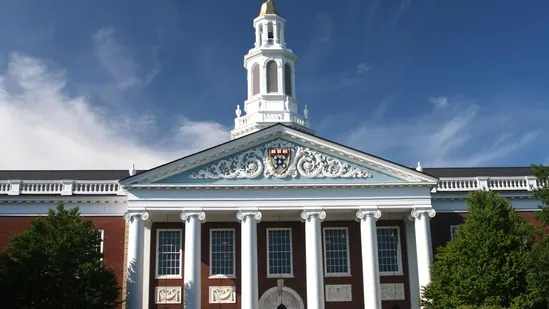

The US News and World Report was earlier criticised after the University of Colombia submitted inaccurate data to bolster its ranking.
Officials of Yale and Harvard law school announced that they will no longer be participating in US News and World Report's annual rankings of the top law school in the world. Questioning the methodology of the list, an official from Yale university said that it was "profoundly flawed."
In a blog post, Dean Heather K Gerken said, "We have reached a point where the rankings process is undermining the core commitments of the legal profession," noting that the school "has taken the top spot every year" since the rankings began.
“As a result, we will no longer participate,” she said as per CBS News saying that the list discourages low-income students or public service aspiring students to pursue courses in the university.
Harvard's Dean John Manning told CBS News that it will also be dropping its name from the list, "because it has become impossible to reconcile our principles and commitments with the methodology and incentives the US News rankings reflect."